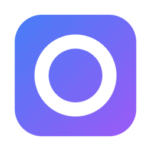

Download Kube Desk.
Free and open source. Install it once; after that it keeps itself up to date.

Kube Desk 0.6.0 for macOS
- Released
- 24 October 2026
- Needs
- macOS 12 or later
- Chip
- Apple silicon (arm64)
- License
- MIT
Install
Three steps, about a minute.
-
Download and open the .dmg
Drag Kube Desk to Applications.
-
Open it the first time
Releases aren’t notarized yet, so macOS asks before opening them. In Applications, right-click Kube Desk and choose Open, then Open again. Or remove the quarantine flag from Terminal:
Terminal $ xattr -dr com.apple.quarantine "/Applications/Kube Desk.app" -
Your clusters are already there
Kube Desk reads every context in
~/.kube/configand$KUBECONFIG. Add more with the + at the bottom of the cluster rail: pick a file, paste a kubeconfig, or enter a server and a token.
Using GKE, EKS or AKS? Their credential plugins (gke-gcloud-auth-plugin,
aws, kubelogin) work even when Kube Desk is opened from Finder, because it
loads your login shell’s PATH.
Updates
Kube Desk checks for updates once a day, and you can check any time from Kube Desk → Check for Updates… or ⌘K. Updates show what’s new before you install them.
- Signed. Every release is signed with Ed25519, and the app checks the signature before installing.
- Small. Usually only the changes are downloaded: going from 0.5 to 0.6 is 6.5 MB.
Set up the assistant
The assistant, ⌘J, is Claude through your own cloud account. Pick one; you only need one of them.
-
Make Claude available to you
Microsoft Foundry: deploy a Claude model in the Foundry portal, such as
claude-opus-5-5. Its Details tab has the Target URI and the key.Google Vertex AI: enable the Claude model in Model Garden, then sign in once in a terminal:
Terminal $ gcloud auth application-default login -
Tell Kube Desk where it is
Open Assistant settings from ⌘K. For Foundry, enter the resource name or the Target URI, the key and the deployment name; the key goes to your macOS keychain. For Vertex AI, enter the project and the region (
globalby default). Save and test checks the connection. -
Ask
Press ⌘J and ask, for example, “Which pods are failing in this cluster, and why?” Changes it proposes wait for your approval. Past chats are under the clock in its header.
Connect an AI agent
Kube Desk is an MCP server for Claude Code, Cursor, Codex, Claude Desktop and other MCP clients. It is off until you turn it on.
-
Turn on the server
Open AI agents, from the robot in the title bar or from ⌘K.
-
Choose what agents may do, per cluster
Off, Read or Propose changes. Every cluster starts at Off. Proposed changes wait for your approval in Kube Desk, with a diff and what they affect.
-
Add it to your client
Kube Desk shows the command for each client, with your token filled in. For Claude Code:
Terminal $ claude mcp add --transport http kubedesk http://127.0.0.1:47428/mcp \ --header "Authorization: Bearer <token from Kube Desk>"Clients that start servers as processes (Cursor, Claude Desktop, Codex) run Kube Desk’s bridge instead. It opens Kube Desk if it isn’t running:
MCP server command "/Applications/Kube Desk.app/Contents/MacOS/Kube Desk" mcp --config <path shown in the app>
Then ask, for example, “Why is checkout failing in production-eu?”
Linux, Windows and Intel Macs
The code is cross-platform: MyGo uses WebKitGTK on Linux and WebView2 on Windows. Releases are only built for Apple silicon so far, so on other systems, build it yourself. You need Go 1.27 or later and Bun; no C toolchain.
$ git clone https://github.com/ftech-vn/kubedesk.git $ cd kubedesk $ bun install $ bun run build # build/darwin-arm64/Kube Desk.app and a .dmg
Build for other platforms, or a universal Mac app:
$ bun run build -- -platform darwin/universal,linux/amd64,windows/amd64
Linux and Windows releases, and notarized macOS builds, are on the roadmap.
Requirements
- System
- macOS 12 Monterey or later
- Chip
- Apple silicon. Intel: build from source
- Clusters
- Any Kubernetes API server your kubeconfig reaches
- Metrics (optional)
- metrics-server, for CPU and memory
- Helm (optional)
- The helm command, to roll releases back. Reading them needs nothing
- Assistant (optional)
- Claude in Microsoft Foundry or Google Vertex AI
- Network
- Your API servers, the update server, and the assistant’s cloud if you use it. No telemetry
- Disk
- About 70 MB